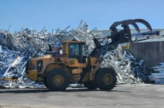

"The employee needs solid Mobile Equipment skills, willingness to learn and an understanding that all Aluminum is not the same."
The Material Loader is responsible for safely and efficiently managing the movement, loading, and unloading of materials within the production process, ensuring adherence to safety, quality, and operational standards. This role requires a proactive approach to time management, the ability to gather and analyze basic data, and a focus on continuous improvement to optimize material handling processes.
Key responsibilities include operating mobile equipment with various attachments, performing basic preventative maintenance, and conducting equipment inspections to ensure reliability and safety. Proficiency in using forklifts, payloaders, and telescopic lifts is required, along with the ability to measure dimensions and quantities accurately for quality control and inventory management. Intermediate computer skills, including the use of MS Office, APICS, and SAP, are essential for tracking and organizing data related to material movement.
The ideal candidate demonstrates critical thinking and problem-solving skills to identify and analyze basic issues, participates in improvement initiatives, and collaborates effectively within a team. Strong communication and adaptability are critical as this role involves working in a dynamic, fast-paced environment. The Material Loader should be goal-oriented, self-aware, and willing to learn, consistently meeting commitments under pressure.
"The employee needs solid Forklift skills, willingness to learn and an understanding that all Aluminum is not the same."
The Material Unloader is responsible for the safe and efficient unloading of materials, ensuring smooth workflow and adherence to safety, quality, and operational standards. This role requires the ability to manage time effectively, solve basic problems, and identify opportunities for process improvements. The ideal candidate demonstrates reliability under pressure, critical thinking, and teamwork skills while consistently achieving goals and contributing to continuous improvement initiatives.
Key responsibilities include operating mobile equipment such as forklifts, payloaders, and telescopic lifts, performing inspections and preventative maintenance, and using various attachments to handle materials. Intermediate computer skills, including proficiency with MS Office, APICS, and SAP, are required for data entry, tracking, and reporting. The Material Unloader must also measure dimensions and quantities accurately to ensure quality control and inventory accuracy.
This position requires strong communication skills to coordinate with team members and supervisors effectively, a willingness to learn, and the ability to adapt to changes in processes and priorities. The Material Unloader must be results-oriented, self-aware, and proactive in maintaining a safe and organized work environment.
Material Unloading: Can manage own time
Material Loading: Can manage own time
Material Unloading: Can locate and gather basic information
Material Loading: Can locate and gather basic information
Material Unloading: Can identify and implement basic improvements
Material Loading: Can identify and implement basic improvements
Material Unloading: Can be counted on to meet commitments under pressure
Material Loading: Can be counted on to meet commitments under pressure
Material Unloading: Can identify and analyze basic problems. Participates in problem-solving tasks, focusing on understanding and interpreting available information
Material Loading: Can identify and analyze basic problems. Participates in problem-solving tasks, focusing on understanding and interpreting available information
Material Unloading: Can complete basic tasks
Material Loading: Can complete basic tasks
Material Unloading: Can effectively work in a team
Material Loading: Can effectively work in a team
Material Unloading: Can collect, organize, and interpret basic data
Material Loading: Can collect, organize, and interpret basic data
Material Unloading: Seeks out learning opportunities. Seeks out new information, ideas and resources to enhance personal growth
Material Loading: Seeks out learning opportunities. Seeks out new information, ideas and resources to enhance personal growth
Material Unloading: Can communicate effectively
Material Loading: Can communicate effectively
Material Unloading: Can make moderate decisions. Considers available information, potential consequences, and organizational goals when making decisions
Material Loading: Can make moderate decisions. Considers available information, potential consequences, and organizational goals when making decisions
Material Unloading: Can understand problems
Material Loading: Can understand problems
Material Unloading: Can cope with changes
Material Loading: Can cope with changes
Material Unloading: Basic use of hand tools
Material Loading: Basic use of hand tools
Material Unloading: Can Complete and achieve basic goals
Material Loading: Can Complete and achieve basic goals
Material Unloading: Recognizes and understands personal emotions, strengths, and weaknesses, and their impact on interactions with others
Material Loading: Recognizes and understands personal emotions, strengths, and weaknesses, and their impact on interactions with others
Material Unloading: Ability to navigate MS Office, APICS & SAP
Material Loading: Ability to navigate MS Office, APICS & SAP
Material Unloading: Knowledge of basic mobile equipment inspection
Material Loading: Knowledge of basic mobile equipment inspection
Material Unloading: Include measuring dimensions, quantities accurately. Operators need to read and use measuring tools,calculate percentages for quality control, defect rates, or efficiency metrics, add, subtract, multiply, and divide fractions and decimals
Material Loading: Include measuring dimensions, quantities accurately. Operators need to read and use measuring tools,calculate percentages for quality control, defect rates, or efficiency metrics, add, subtract, multiply, and divide fractions and decimals
Material Unloading: Basic Preventative maintenance on mobile equipment
Material Loading: Basic Preventative maintenance on mobile equipment
Material Unloading:
Payloader equipment certification
Telescopic lift certification
Forklift equipment certification
Basic use of mobile equipment attachments
Material Loading:
Payloader equipment certification
Telescopic lift certification
Forklift equipment certification
Basic use of mobile equipment attachments